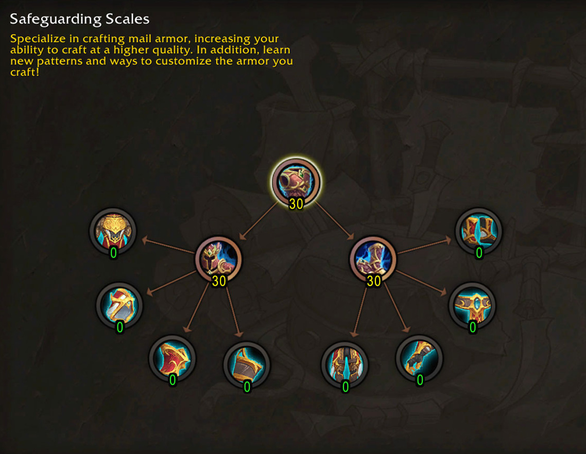
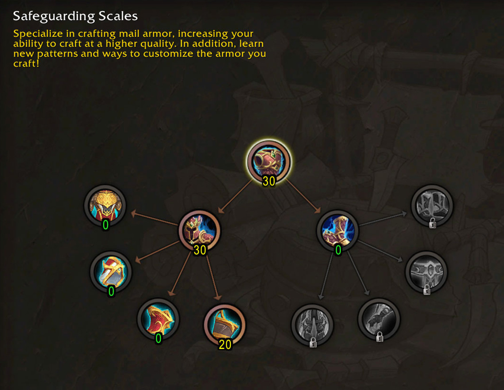
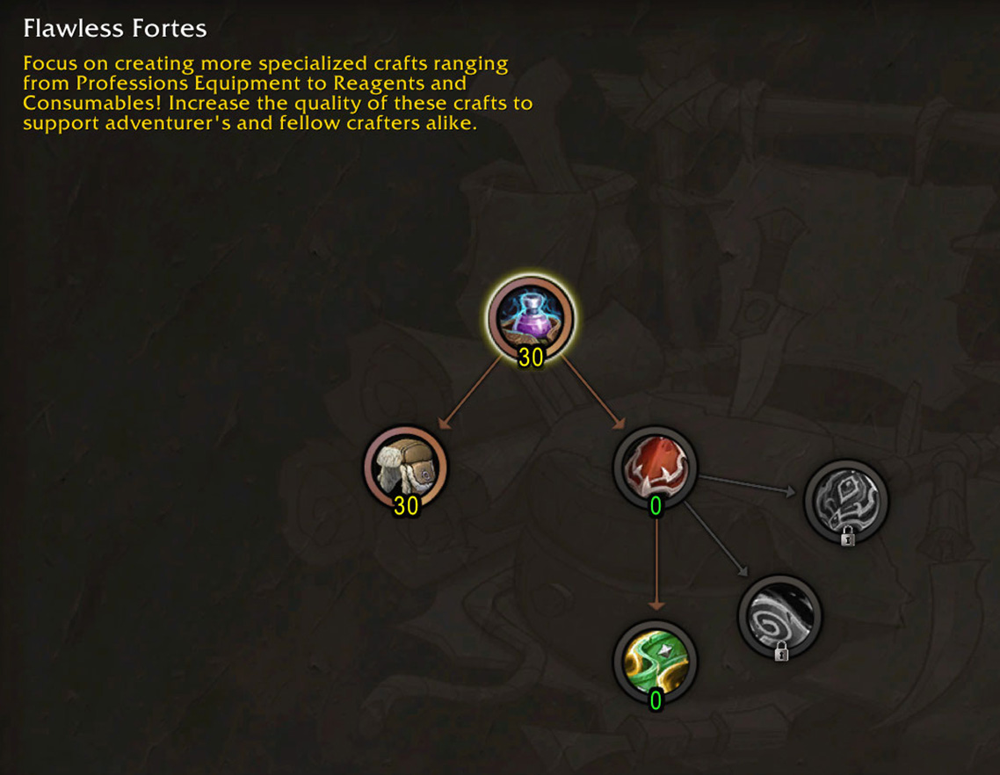
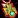
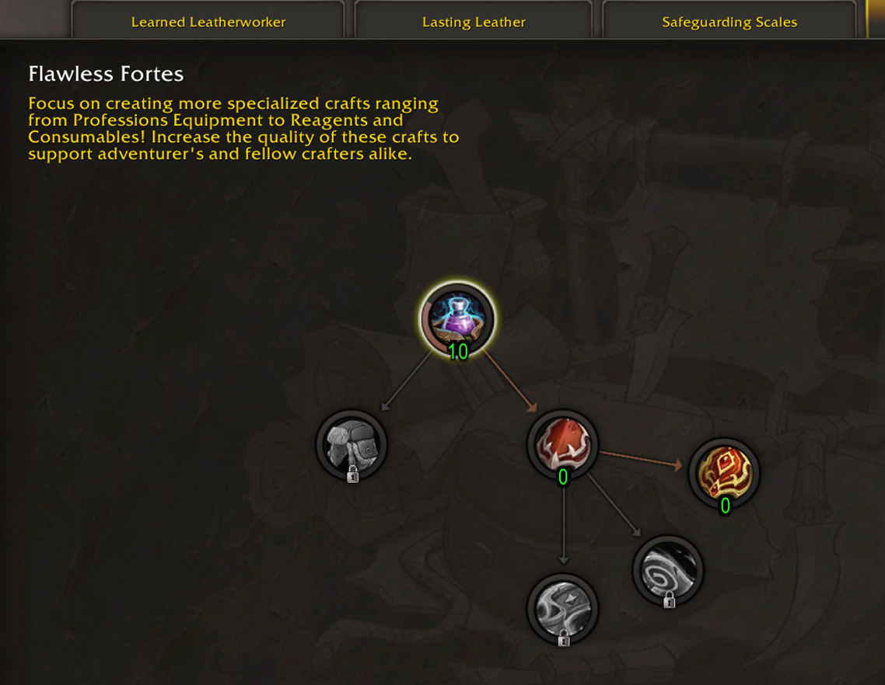
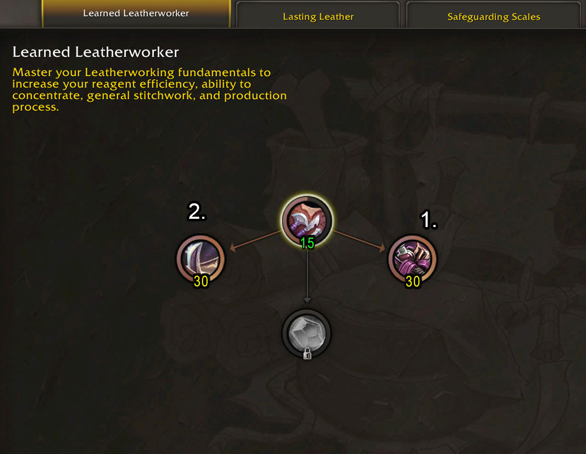
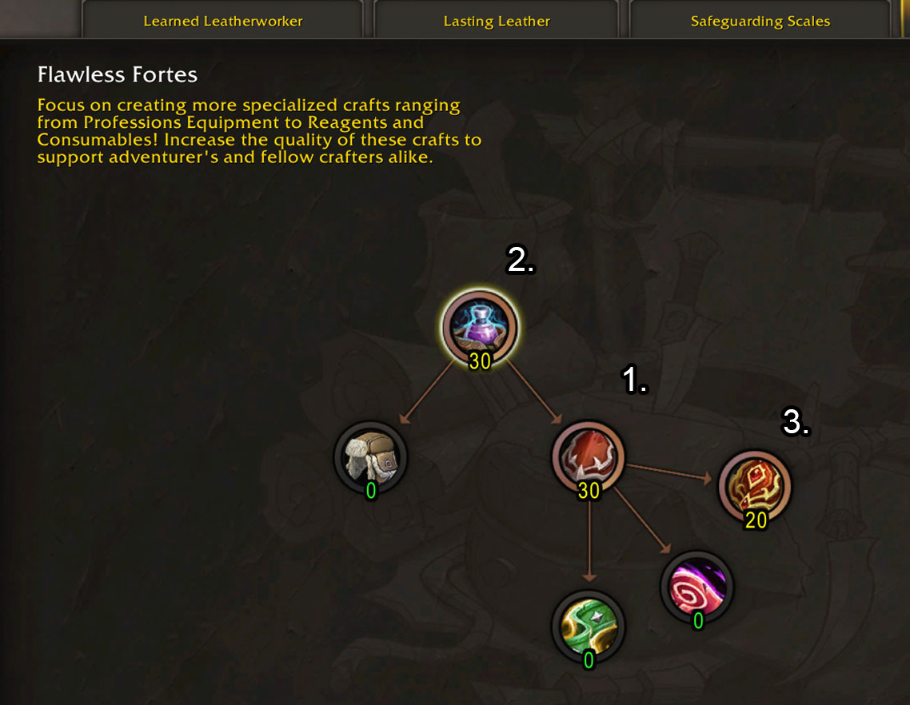
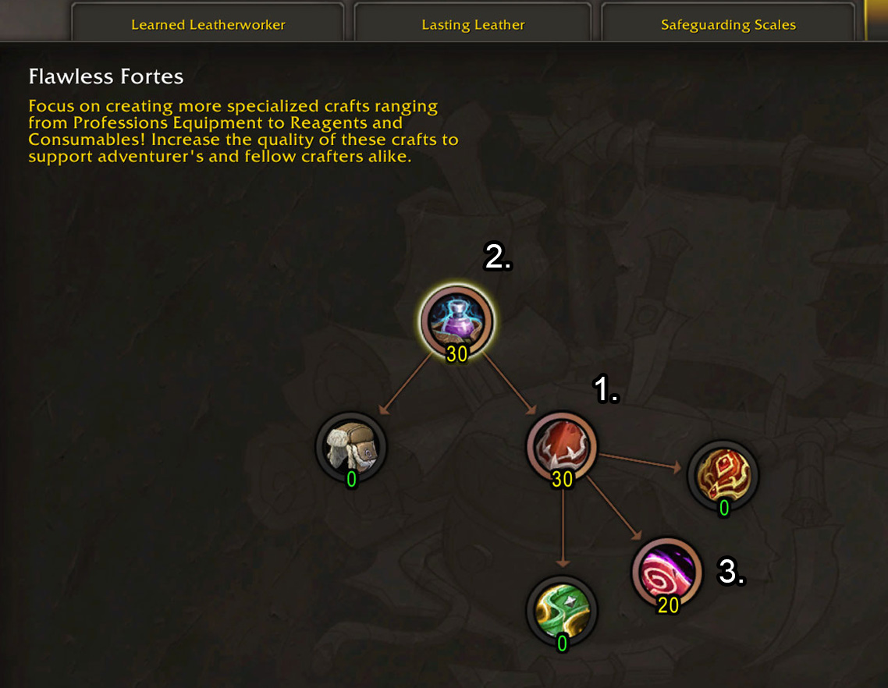
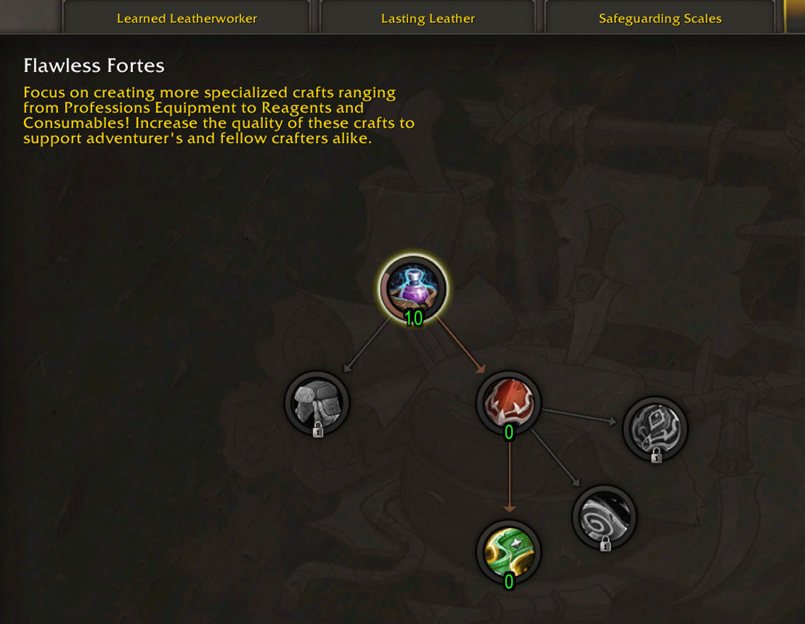
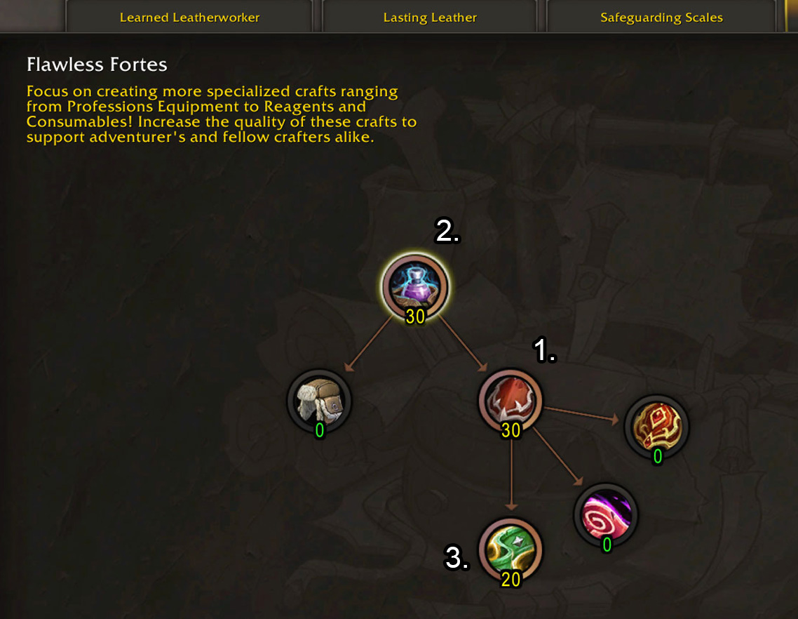

This guide will help you with the new Leatherworking specialization trees in Midnight. If you want to craft high-end gear, make gold with minimal effort, or play the Auction House, I have a build for you.
Getting Knowledge Points
This guide focuses purely on builds and where to put your points once you have them. If you need help finding points, check out my main guide:
Midnight Leatherworking Recipes & Knowledge Points
Timeline & Unlock Pace
You can get around 40-50 Knowledge Points on the first day from first crafts and one-time treasures. After that, you will earn roughly 25-30 points per week from patron orders, weekly quests, treasure drops, and treatises. So in your first week, you can expect around 60 points, maybe 70 if you also have enough renown to buy books.
I wrote this guide based on that first 60-70 point mark, with suggestions for what to do as you gain more points over time.
Specialization Overview
| Specialization | Description |
|---|---|
| Learned Leatherworker | Crafting stat boosts: Multicraft, Resourcefulness, and Concentration refund from Ingenuity breakthroughs. |
| Lasting Leather | Leather armor recipes for all 8 slots. Unlocks the epic Silvermoon Agent's set. |
| Safeguarding Scales | Mail armor recipes for all 8 slots. Unlocks the epic Farstrider's set. |
| Flawless Fortes | Armor Kits, profession tools and accessories for other crafters, and optional reagents. |
Builds & Talent Trees
Which Build Should You Choose?
I made 3 different builds for you to choose from. Each one is for a different playstyle, so you don't have to worry about wasting your points. Check the list below to see which one fits you the best, whether you want to raid, make gold, or just help your guild:
- Standard: This is the standard build for most players. Best for personal power and flexible crafting.
- Crafting Orders: Focuses on crafting armor for other players through the Crafting Order system. Not recommended for beginners.
- Auction House focused: This build is for players who want to make gold by crafting consumables, reagents, or optional reagents in bulk and listing them on the Auction House.
Click on the tabs below to see the detailed guides. I will explain exactly where to spend your points step-by-step. I also included a picture of the talent tree so you can follow along easily.
Standard Build
With this build, you can craft your own max rank gear for your chosen slot, or even all slots. It is the safest choice for most players.
You don't have to look for other players to craft for you or worry about tipping. You are self-sufficient. With this build you are basically set for the whole expansion, and with each season you will be able to craft max rank gear.
0-90 Points
- Invest 30 points into the main Root node.
- Decide between Left (Head, Chest, Shoulder, Wrist) or Right (Legs, Hands, Waist, Feet). Put 30 points into your chosen node to unlock 4 recipes.
- Spend 30 points on the other side to unlock the rest of the recipes.
I only include the picture of one specialization because Lasting Leather (Leather Armor) and Safeguarding Scales (Mail Armor) specializations are identical in structure.

Next Steps
You have your foundation. Now choose a path:
Unlock more Armor types
You can go to the other specialization to unlock the other armor type (Mail if you did Leather first, or vice versa). This will let you craft for alts or friends.
Optimize Concentration use
You can start investing points into the Learned Leatherworking specialization to get more Ingenuity, Multicraft, and Resourcefulness.
If you mainly use your concentration for crafting items with silver materials to create gold quality items, then focus on multicraft and ingenuity first.
If you mainly use your concentration for crafting armors for yourself or others, then focus on Resourcefulness and then ingenuity first.
Personal Crafting Orders
To craft Rank 5 gear without relying on Concentration, you need to specialize. If you try to learn everything at once, you won't have enough skill to craft anything at max rank.
Choose Your Path
You have two choices for your early points:
- Profession Equipment: This is a "one-time" investment. You spend 50 points in a separate specialization, and you are done. It unlocks max rank crafting for all profession tools at once.
- Armor: This requires constant investment. You need roughly 60 points to open the armor tree, and then 20 points for each specific slot. You can usually max out one new armor slot every week.
Which one is better?
I recommend choosing Armor.
Profession Equipment is risky. It relies on your realm's population, and demand drops fast once everyone has their tools. If you start late, don't pick this.
Armor is safer. Players need gear updates all season long, so the demand is consistent.
Where to Spend Points
Armor Specializations
I only include the picture of one specialization because Lasting Leather (Leather Armor) and Safeguarding Scales (Mail Armor) specializations are identical in structure.
- 0-30 Points: Max out the "Root" node for base skill.
- 30-60 Points: Pick the left or right path for your chosen slot.
- 60-80 Points: Invest 20 points to fully max out your chosen slot. I'm using the Wrist slot as an example, but you can apply this to any slot.

Profession Equipment
This path is much simpler. You don't need to unlock individual slots. One specialization covers everything.
- 0-30 Points: Invest 30 points into the starting node.
- 30-60 Points: Invest 30 points into the next node.
- Done! You can now craft all profession tools at max rank.

Next Steps
Depending on which path you started with, here is what you should do next:
If you picked Profession Equipment:
You can either finish this build by maxing out Resourcefulness in the Learned Leatherworker tree, or swap over to Armor Slots if you aren't getting enough orders.
If you picked Armor Slots:
I recommend maxing out the 4 slots in your current sub-category first. After that, check the Crafting Orders on your realm:
- High Volume: If you see lots of orders for slots you don't have, unlock recipe nodes for the rest of your armor type.
- Low Volume: If you are happy with your current recipes, grab the Resourcefulness node in Learned Leatherworker to get more materials back from your crafts.
Once you are fully maxed out, you can start unlocking the other armor type (Leather -> Mail or Mail -> Leather).
Auction House Build
This build is for players who want to make gold by crafting consumables, reagents, or optional reagents in bulk and listing them on the Auction House.
What to craft
In the table below you can see which specialization affects which items. All three can be good for making money, but Brimming Basics (Reagents) and Crucial Consumables are probably more consistent for high-volume crafting.
Overwhelming Optionals will really depend on how good the optional reagents are for the current season, so keep an eye on that. If the optional reagents are in high demand, that specialization can be very profitable.
| Crucial Consumables | Brimming Basics (Reagents) | Overwhelming Optionals |
|---|---|---|
| Forest Hunter's Armor Kit | Devouring Banding | |
| Blood Knight's Armor Kit |  Blessed Pango Charm |
|
| Thalassian Scout Armor Kit | Sin'dorei Armor Banding | Primal Spore Binding |
| Void-touched Drums | Silvermoon Weapon Wrap | - |
Where to Spend Points
Crucial Consumables (Armor Kits, Drums)
This is the most consistent market. Armor Kits sell steadily all season, and Drums spike on progression weeks.
- 10 points into Flawless Fortes to unlock a sub-spec, pick Commanding Commodities then Crucial Consumables.
- 5 points into the Learned Leatherworker root node to unlock a sub-spec.
- 30 points into Mastering Multicraft.
- 10 points into Learned Leatherworker to unlock second sub-spec.
- 30 points into Waning Waste.
Leg armor recipe

Multicraft & Resourcefulness

Getting more skill
Now go back to Flawless Fortress and get every single point leading up to Crucial Consumables.

Brimming Basics (Reagents)
Processed reagents like Scalewoven Hide sell to other crafters every day. Stable demand make this the safest pick.
- 5 points into the Learned Leatherworker root node to unlock a sub-spec.
- 30 points into Mastering Multicraft.
- 10 points into Learned Leatherworker to unlock second sub-spec.
- 30 points into Waning Waste.
Getting more skill
Now go back to Flawless Fortress and get every single point leading up to Brimming Basics.

Overwhelming Optionals (Optional Reagents)
Items like Devouring Banding can be very profitable during gearing weeks, but demand is seasonal. Check your AH before committing here.
- 10 points into Flawless Fortes to unlock a sub-spec, pick Commanding Commodities then Overwhelming Optionals.
- 5 points into the Learned Leatherworker root node to unlock a sub-spec.
- 30 points into Mastering Multicraft.
- 10 points into Learned Leatherworker to unlock second sub-spec.
- 30 points into Waning Waste.
Recipe unlock

Multicraft & Resourcefulness
Getting more skill
Now go back to Flawless Fortress and get every single point leading up to Overwhelming Optionals.
